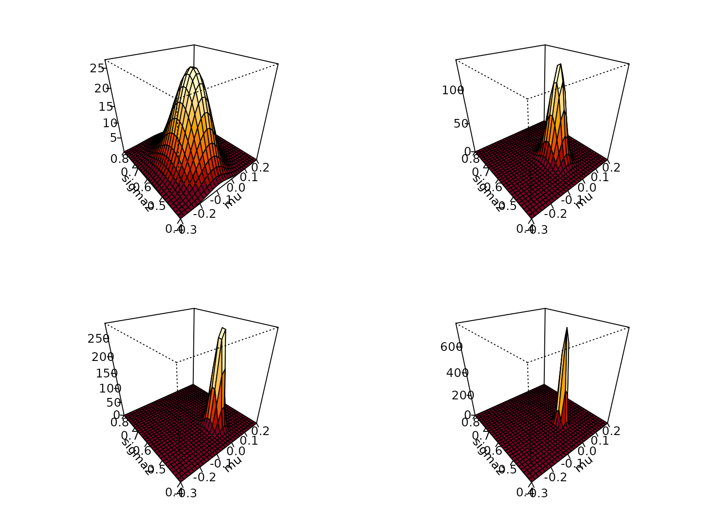

Chapter 4: A First Bayesian Analysis of Continuous Data
Chapter04.RmdSwiss franc versus US dollar
Example 4.1: The data
We use exchange rate data contained in the package stochvol, covering the period from January 3, 2000, until April 4, 2012. We are interested in the percentage log returns of the the Swiss franc (CHF) against the US dollar (USD).
data(exrates, package = "stochvol")
y <- 100 * diff(log(exrates$USD / exrates$CHF))
hist(y, breaks = 50, main = "Histogram", xlab = "CHF/USD log returns")
ts.plot(y, main = "Time series plot", ylab = "CHF/USD log returns")
Example 4.2: A first posterior
For a first joint inference on and , we assume a Gaussian likelihood,
In addition, we assume the improper prior yielding the posterior We can plot this (not that base R does not ship the density function of the inverse gamma, so we define it ourselves using the transformation law of densities). Note that in R, the Gaussian distribution is parametrized in terms of mean and standard deviation (not variance).
dinvgamma <- function(x, a, b, log = FALSE) {
logdens <- dgamma(1/x, a, b, log = TRUE) - 2 * log(x)
if (log) logdens else exp(logdens)
}
posterior <- function(mu, sigma2, ybar, s2, N) {
dnorm(mu, ybar, sqrt(sigma2 / N)) * dinvgamma(sigma2, (N - 1) / 2, N * s2 / 2)
}
mu <- seq(-.3, .2, length.out = 30)
sigma2 <- seq(.4, .8, length.out = 30)
# Generate the desired number of colors from a palette
nbcol <- 10
color <- hcl.colors(10, "YlOrRd")
for (n in c(100, 500, 1000, length(y))) {
ytmp <- head(y, n)
z <- outer(mu, sigma2, posterior,
ybar = mean(ytmp), s2 = var(ytmp) * (n - 1) / n, N = n)
nrz <- nrow(z)
ncz <- ncol(z)
# Compute the z-value at the facet centres
zfacet <- z[-1, -1] + z[-1, -ncz] + z[-nrz, -1] + z[-nrz, -ncz]
# Recode facet z-values into color indices
facetcol <- cut(zfacet, nbcol)
persp(mu, sigma2, z, col = color[facetcol], ticktype = "detailed", zlab = "",
xlab = "mu", ylab = "sigma2", phi = 30, theta = -40)
}